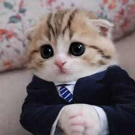
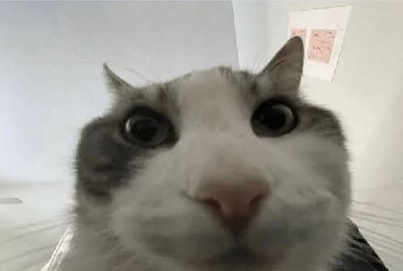
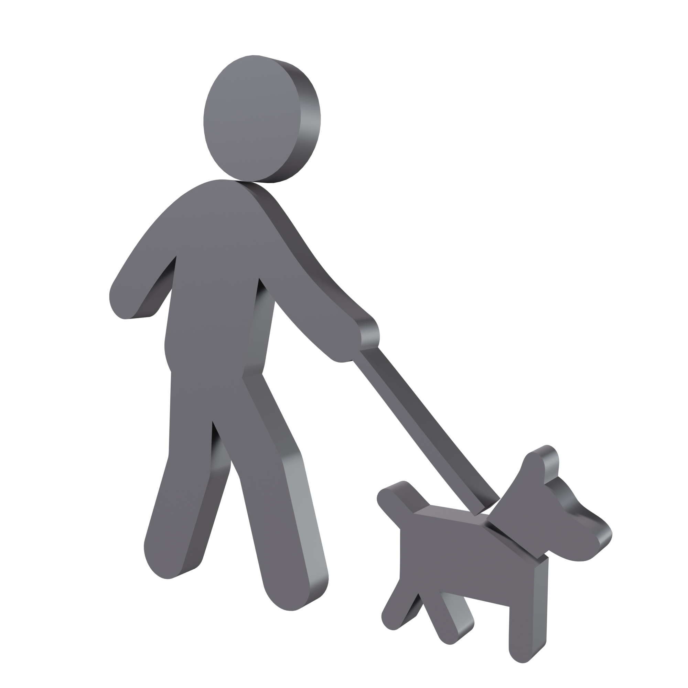
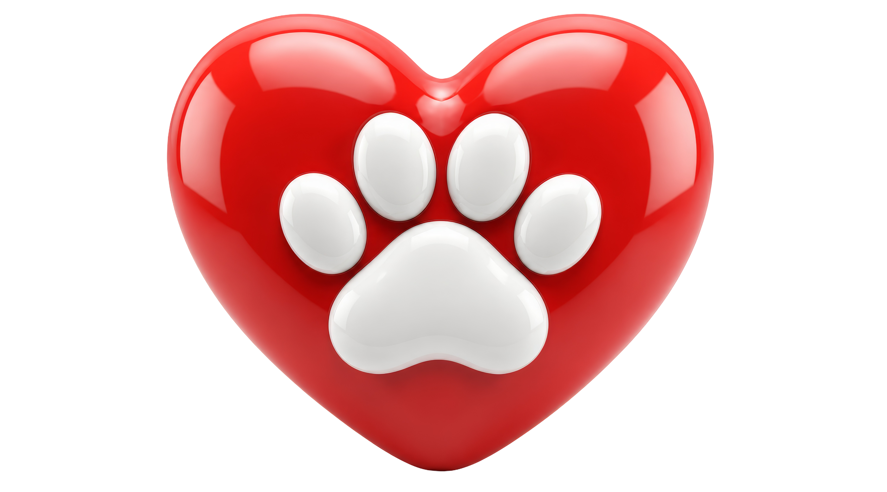

Disponible
Cucurella
Gato • 2 años • Tamaño Mediano
Cucurella fue rescatado cerca de Madrid. Es dinámico, amigable, súper jugueton y convive muy bien con otros gatos. Solo come paella.
En la Fundación Huellas del Puerto nos dedicamos a entregar una segunda oportunidad a los animales desprotegidos. Creemos firmemente en el poder de la tenencia responsable, el control ético de la población animal y la creación de un vínculo duradero entre las mascotas y sus nuevas familias.
Trabajamos con un equipo de voluntarios comprometidos y vecinos de Valparaíso para ofrecer atención médica, alimento y sobre todo, mucho amor.

Gato • 2 años • Tamaño Mediano
Cucurella fue rescatado cerca de Madrid. Es dinámico, amigable, súper jugueton y convive muy bien con otros gatos. Solo come paella.

Gato • 3 meses • Tamaño Pequeño
Licenciado Pedro es un gato reservado al principio, pero muy ronroneador cuando toma confianza. Le encantan las series de criminalística.

Gato • 3 años • Tamaño Mediano
Un gato esponjoso y cariñoso que ama estar acurrucado en el sillón. Ideal para departamentos o casas tranquilas.

Ayúdanos en los paseos diarios, jornadas de adopción y limpieza de caniles.
Acoje transitoriamente a un rescatado mientras encuentra su hogar definitivo.

Aporta con alimento, medicamentos o insumos de aseo para la fundación.
Revisa nuestra lista de animales rescatados y completa la solicitud en línea.
Ir al Formulario de Adopción